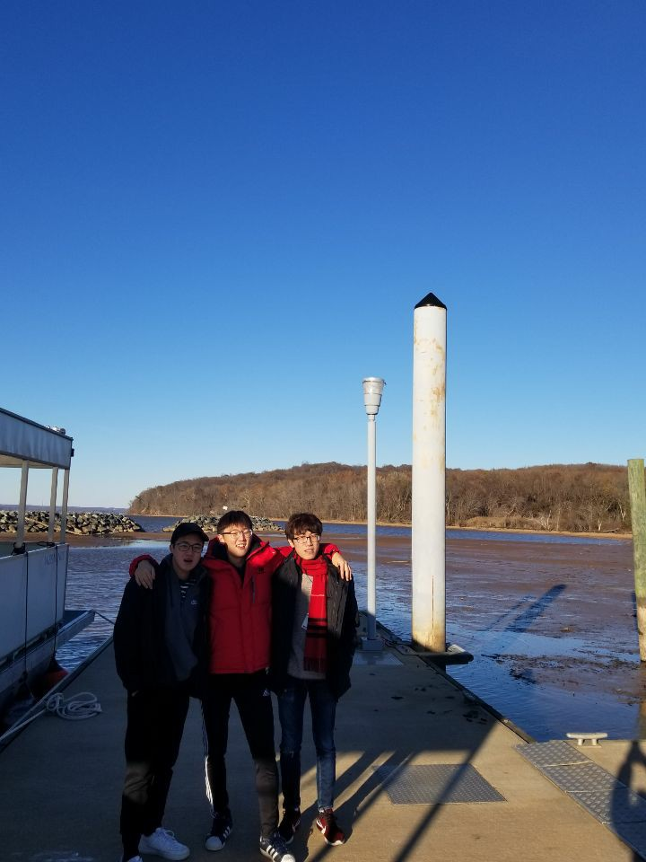

John and his friends at Youth KOSTA 2019, Picture taken by Dong
Personal background: Born in South Korea, moved to U.S. 10 years ago. 20 years old
Professional: 4 year experience in beauty supply stores - used to be family business. Currently employeed for management of online store in beauty industry.
Academic background: Currently enrolled in UNCC for BS degree on Computer Science. Minoring Japanese and looking forward for any foreign interactions for my future career if necessary. Looking forward to find a job in my profession field.
Background in the subject matter of this course: Ever since I've been spending hours of my life in front of computers everyday, I found finding career goal in computer profession would be an interesting turning point of my life.
Primary Computer Platform: Windows 10 at home, waiting for Windows 11 but worried about the prototype's stability. Never used Mac before, but intrested to learn more.
Courses I'm taking and reason for each:
ITSC 3160 - Database Design & Implementation - Big necessary course for my major, important concept to know.
ITIS 3135 - Web App Design and Developement - Interested to take a course and learn more about web design
ITSC 3146 - Intro to Operating Systems & Networking - Detailed materials and important concepts to learn.
ITSC 3688 - Computer & Impact on Society - One of my regualars in UNCC
JAPN 2202 - Intermediate Japanese II - My minor course
Funny story or interesting item about yourself to remember you by:
My body is so weak (I don't work out or go out), that I once broke my arm by running to a wall back in middle school.
I'd also like to share:
I'm hoping to host/manage a Youtube channel as a tool to improve my editing skills..